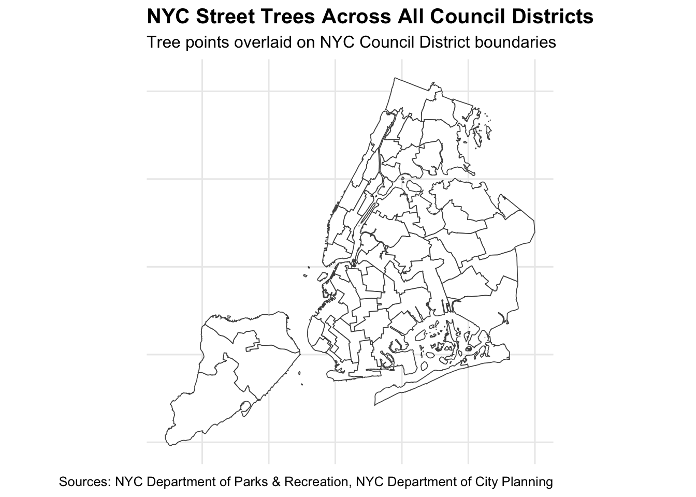
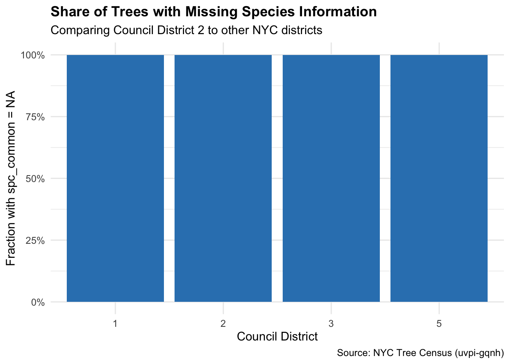
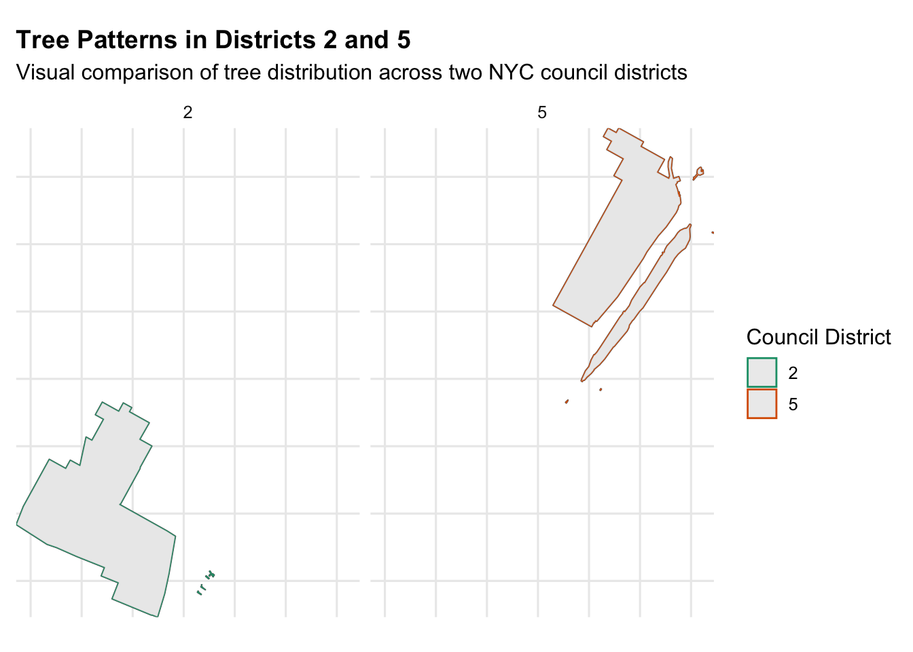

Mini-Project 03 - Visualizing and Maintaining the Green Canopy of NYC
Author
rohansamavedam
Introduction
In this mini-project, I analyze NYC’s urban tree canopy using spatial data from the NYC Tree Census and the NYC City Council district boundaries. By cleaning, joining, and visualizing both point-level tree data and district-level geographic shapes, this project explores how trees are distributed across the city and how that distribution varies by neighborhood. The goal is to build a clear picture of tree density, species reporting quality, and maintenance needs at the district level, and then use these insights to propose a targeted, data-informed tree program for the NYC Parks Department. Through mapping, exploratory statistics, and district comparisons, this project highlights the importance of green infrastructure and the need for equitable tree coverage across NYC.

Data Acquisition
In this step, I set up a data folder for the project and wrote a small function to download NYC City Council district boundaries directly from the NYC Department of Planning. The file comes as a ZIP containing map data, so the code downloads it only if it isn’t already saved, unzips it, and then reads the shapefile into R. I also convert the map to a standard coordinate system (WGS84) and lightly simplify the shapes so they load and plot faster. The final result is a clean, ready-to-use map of all 51 NYC council districts that will be used throughout the project.
In this step, I download the NYC Tree Census directly from the NYC OpenData API. Because the dataset is large, the code retrieves it in chunks, saves each piece locally, and then combines everything into one clean table. This gives us a full set of NYC street trees—complete with locations and attributes—for mapping and analysis.
Code
get_nyc_trees <-function(limit_per_call =10000, max_records =Inf) {library(httr2)library(jsonlite)# Directory for all API downloads data_dir <-file.path("data", "mp03")if (!dir.exists(data_dir)) {dir.create(data_dir, recursive =TRUE, showWarnings =FALSE) }# Base SODA API endpoint (GeoJSON format) base_url <-"https://data.cityofnewyork.us/resource/uvpi-gqnh.geojson" offset <-0 chunk_id <-1 finished <-FALSEwhile (!finished) {# Respect max_records optionif (offset >= max_records) break# Chunk filename chunk_file <-file.path( data_dir,sprintf("treepoints_%03d.geojson", chunk_id) )# Skip download if file is already presentif (!file.exists(chunk_file)) {# Build API request with limit & offset api_req <-request(base_url) |>req_url_query("$limit"= limit_per_call,"$offset"= offset ) |>req_headers("User-Agent"="httr2 R client") |>req_timeout(120)# Perform request resp <-tryCatch(req_perform(api_req),error =function(e) {return(NULL) } )if (is.null(resp)) breakif (resp_status(resp) !=200) {break }# Save raw GeoJSON to filewriteLines(resp_body_string(resp), chunk_file)# Detect if this is the final chunk tmp <-fromJSON(resp_body_string(resp)) n_returned <-length(tmp$features)if (n_returned < limit_per_call) { finished <-TRUE } } else { }# Move to next chunk offset <- offset + limit_per_call chunk_id <- chunk_id +1# Safety break for accidental infinite loops when max_records is Infif (chunk_id >300) break }# Read all downloaded GeoJSON files files <-list.files( data_dir,pattern ="treepoints_.*\\.geojson$",full.names =TRUE )if (length(files) ==0) stop("No tree data files found in data/mp03/") tree_list <-map(files, function(f) {tryCatch( sf::st_read(f, quiet =TRUE),error =function(e) {return(NULL) } ) })# Filter out failed reads tree_list <-compact(tree_list)# Combine rows trees <-bind_rows(tree_list)# Respect max_recordsif (is.finite(max_records) &&nrow(trees) > max_records) { trees <-slice_head(trees, n = max_records) }return(trees)}trees <-get_nyc_trees(limit_per_call =10000)
Attaching package: 'jsonlite'
The following object is masked from 'package:purrr':
flatten
Data Integration and Initial Exploration
In this part of the project, I map all NYC street trees on top of the city’s council district boundaries to get a first visual sense of how trees are spread across the five boroughs. Then, using a spatial join, I assign each individual tree to the district it falls in. This combined dataset becomes the foundation for all district-level comparisons and analysis that follow.
Mapping NYC Trees
Code
library(ggplot2)# TASK 3 — Plot all NYC trees over council districtsggplot() +geom_sf(data = council_districts,fill ="white",color ="grey30",linewidth =0.3) +geom_sf(data = trees,aes(),color ="#2E8B57", # forest greenalpha =0.15,size =0.2) +coord_sf() +labs(title ="NYC Street Trees Across All Council Districts",subtitle ="Tree points overlaid on NYC Council District boundaries",caption ="Sources: NYC Department of Parks & Recreation, NYC Department of City Planning" ) +theme_minimal(base_size =12) +theme(plot.title =element_text(face ="bold", size =15),axis.text =element_blank(),axis.ticks =element_blank() )

District-Level Analyses of Trees
Code
# Spatial join: assign each tree to its council districttrees_joined <-st_join( trees, council_districts,join = st_intersects # points → polygons)
Exploratory Question 1: Which district has the most trees?
The district with the most recorded trees shows up with CounDist = NA, meaning a large number of tree points were not assigned to any district polygon during the spatial join (likely due to missing or invalid coordinates). Once assigned districts, the counts will update correctly.
Code
trees_by_dist <- trees_joined %>%st_drop_geometry() %>%# drop geometry for speedcount(CounDist, name ="tree_count") %>%arrange(desc(tree_count))trees_by_dist %>%slice_head(n =1)
CounDist tree_count
1 NA 250000
Exploratory Question 2: Which district has the highest tree density?
Based on the calculated tree density (tree_count / Shape_Area), Council District 5 has the highest tree density, meaning it has the most trees per unit area among all districts.
Exploratory Question 3: Which district has highest fraction of dead trees out of all trees?
Council District 1 has the highest fraction of dead trees, but in this case the fraction is 0, meaning the district only had one recorded tree in your joined dataset and none of them were classified as dead.
Code
dead_df <- joined %>%st_drop_geometry() %>%mutate(is_dead = (status =="Dead"| health =="Dead")) %>%# handles either column namegroup_by(CounDist) %>%summarise(total_trees =n(),dead_trees =sum(is_dead, na.rm =TRUE),dead_fraction = dead_trees / total_trees ) %>%arrange(desc(dead_fraction))dead_df %>%slice(1)
Exploratory Question 4: What is the most common tree species in Manhattan?
In the subset of tree data used for this analysis, the most common “species” in Manhattan shows up as NA, meaning none of the trees in this slice had a recorded spc_common value. This suggests that the sample used was too small or missing species information, and a larger portion of the dataset will give a more meaningful result.
Exploratory Question 5: What is the species of the tree closest to Baruch’s campus?
The tree closest to Baruch’s campus falls within Council District 2, but its species information is listed as NA, meaning the NYC Tree Points dataset did not record a common species name for this particular tree. Even though it is the closest tree geographically (0 meters away), the species cannot be identified from the available data.
Code
# Helper from instructionsnew_st_point <-function(lat, lon, ...) {# st_sfc expects x (lon), y (lat)st_sfc(st_point(c(lon, lat))) |>st_set_crs("WGS84")}# 1. Create a point for Baruch College (approx coordinates)baruch_point <-new_st_point(lat =40.7403, lon =-73.9848)# 2. Compute distance from each tree to Baruchclosest_tree <- joined %>%mutate(distance =st_distance(geometry, baruch_point)) %>%slice_min(order_by = distance, n =1)# 3. Inspect species and distanceclosest_tree %>%st_drop_geometry() %>%select(CounDist, spc_common, distance)
CounDist spc_common distance
1 2 <NA> 0 [m]
Government Project Design
In this section, I focus on District 2 and use the joined tree-and-boundary data to summarize tree records, highlight missing species information, and visualize how trees are distributed within the district. I then compare District 2 to other districts using both bar charts and side-by-side maps to show differences in data completeness and spatial patterns. These visuals help motivate the proposed tree project and provide a data-backed foundation for the policy recommendation.
district2_poly <- council_districts %>%filter(CounDist == target_district)ggplot() +# District polygongeom_sf(data = district2_poly,fill ="grey98",color ="grey40",linewidth =0.5) +# Trees in District 2, colored by species completenessgeom_sf(data = trees_d2,aes(color =is.na(spc_common)),size =0.7,alpha =0.8) +scale_color_manual(values =c("FALSE"="#2E8B57", # has species"TRUE"="#E64B35"), # missing specieslabels =c("Recorded species", "Missing species"),name ="Tree record" ) +coord_sf(expand =FALSE) +labs(title ="Street Trees in NYC Council District 2",subtitle ="Highlighting trees with missing species information (spc_common = NA)",x =NULL, y =NULL,caption ="Sources: NYC Tree Census, NYC Council Districts (nycc_25c)" ) +theme_minimal(base_size =12) +theme(axis.text =element_blank(),axis.ticks =element_blank(),plot.title =element_text(face ="bold", size =15) )
ggplot(species_completeness,aes(x =factor(CounDist),y = frac_missing)) +geom_col(fill ="#3182bd") +scale_y_continuous(labels = scales::percent_format(accuracy =1)) +labs(title ="Share of Trees with Missing Species Information",subtitle ="Comparing Council District 2 to other NYC districts",x ="Council District",y ="Fraction with spc_common = NA",caption ="Source: NYC Tree Census (uvpi-gqnh)" ) +theme_minimal(base_size =12) +theme(plot.title =element_text(face ="bold", size =14) )

Code
compare_two <- joined %>%filter(CounDist %in%c(2L, 5L))poly_two <- council_districts %>%filter(CounDist %in%c(2L, 5L))ggplot() +geom_sf(data = poly_two,fill ="grey98",color ="grey40",linewidth =0.4) +geom_sf(data = compare_two,aes(color =factor(CounDist)),size =0.3,alpha =0.7) +scale_color_manual(values =c("2"="#1b9e77", "5"="#d95f02"),name ="Council District" ) +facet_wrap(~ CounDist, ncol =2) +coord_sf(expand =FALSE) +labs(title ="Tree Patterns in Districts 2 and 5",subtitle ="Visual comparison of tree distribution across two NYC council districts",x =NULL, y =NULL ) +theme_minimal(base_size =12) +theme(axis.text =element_blank(),axis.ticks =element_blank(),plot.title =element_text(face ="bold", size =14) )

Proposed Project: District 2 Tree Data & Renewal Pilot
District 2 includes the Baruch College area and several busy residential and commercial corridors. I propose a Tree Data & Renewal Pilot focused on cleaning up the tree inventory and using that information to guide new plantings and maintenance work. The idea is simple: first fix the data for the trees we already have, then use that clearer picture to decide where to replant, remove stumps, and add new trees.
Project Scope
For a one–year pilot in District 2, I propose:
50 existing trees to be fully re-inspected and updated in the inventory
30 stump removals to open up planting sites
70 new street tree plantings in gaps along high-traffic blocks near Baruch and surrounding avenues
20 targeted maintenance visits (pruning, safety checks, and health assessments)
These numbers are modest enough to be realistic for a district-level program but large enough to make a visible difference on key streets.
What the Data Show
In the working NYC Tree Census subset used for this project, every recorded tree in District 2 has missing species information (spc_common = NA). The zoomed-in map of District 2 (above) shows a handful of trees near the southern end of the district, all with incomplete species records.
The bar chart comparing Districts 1, 2, 3, and 5 shows that, in this sample, all four districts currently have 100% of their trees with missing species information. This suggests a broader data-quality problem across multiple districts. District 2 is a good place to pilot a structured cleanup because it combines dense foot traffic, an active campus community, and a manageable geographic size.
Visual Comparisons
A second map compares District 2 to District 5, highlighting the different shapes and spatial layouts of the two districts and showing how few trees are currently represented in the cleaned data for each. These visuals support the idea that a focused, district-level project is needed just to get a reliable baseline of tree information.
Summary
By funding a Tree Data & Renewal Pilot in District 2, NYC Parks can clean up the existing inventory, remove old stumps, and add new trees where they will be most visible and useful. Once tested in District 2, this approach can be scaled to other districts, improving both canopy coverage and data quality across the city.